Camera Controls
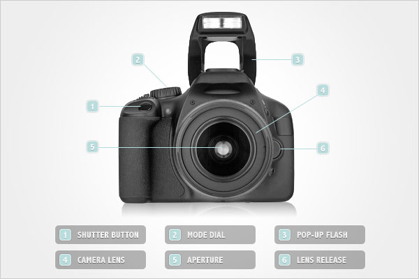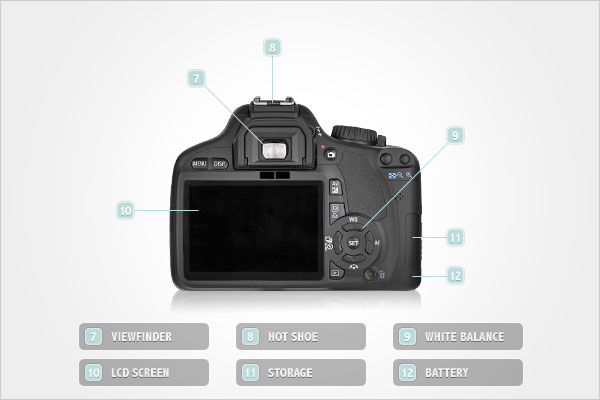Image Sensor
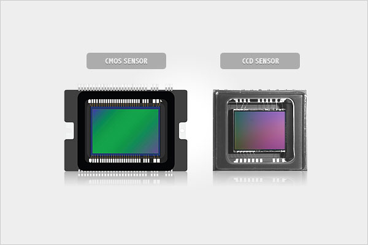Since the dawn of photography, cameras have captured and stored images on glass plates or on film. Today, digital cameras capture the images on a nifty piece of technology – the image sensor. The image sensor is made up of millions of light sensitive photodiodes set on a grid, where each photodiode records a tiny portion of the image as a numeric value that corresponds to a specific brightness level, which is then used to create your image. Image sensors, whether they are CCD or CMOS, vary from camera to camera but they’re basically the same, and the megapixel count shouldn’t be a priority in the decision-making process when buying a camera. Why? Because the size of the sensor is actually more important that the number of megapixels.
Camera Lens
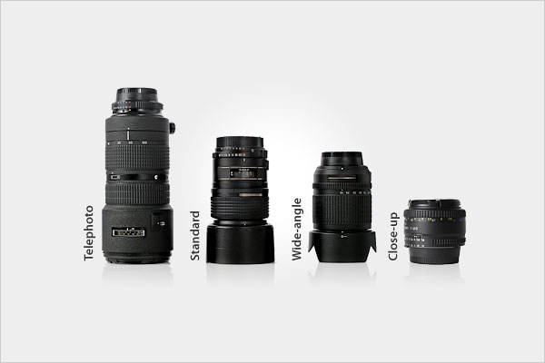A lens is an optical component made out of glass, high quality plastic, or ceramic, which captures the light and assembles it on a point of focus at the matte screen passing through a condensing lens inside the camera. If you are looking for ease of handling, you can go for point-and-shoot cameras with fixed lenses. However if you are concerned about picture quality, you should invest in a digital SLR (DSLR) camera with interchangeable lenses. Interchangeable lenses allow you to have much more control of your images, and to be far more creative than you can be with a point-and-shoot camera. All in all, DSLR cameras produce a more professional photograph.
Camera Modes
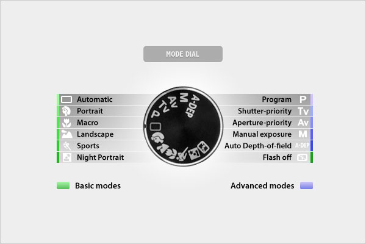DSLR cameras are equipped with a variety of shooting modes that increase the automatic decision making of the camera. These cameras, thankfully, have semi-automatic and manual modes too, which put the control back in your hands for more technical and creative applications. In PROGRAM mode, the camera sets the exposure, but the user can adjust the white balance, ISO, focusing and metering. There are two semi-automatic modes: 1) Shutter Priority (Tv) is where the user sets the shutter speed and the camera determines the aperture. Shutter Priority allows the user to control how “the action” is captured. 2) Aperture Priority (Av) where the user selects the aperture and the camera determines the shutter speed. Aperture Priority allows the user to control the depth-of-field.
Built-in Flash
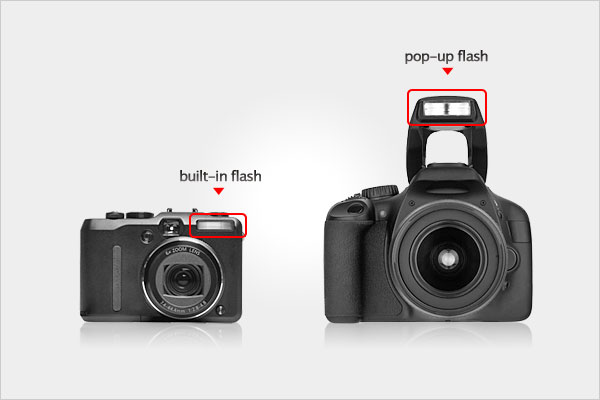A built-in flash is provided with every digital camera. The camera’s computer determines need for flash according to the exposure metering, focusing and zoom systems. On compact cameras the built-in flash is triggered to go off in perfect sync with the shutter, but it’s hard to control the timing and intensity of the flash. This can result in washed-out photos. DSLRs have pop-up flashes that can be controlled in various ways to be in-sync with the shutter or drag behind the shutter; in addition the intensity can be manipulated in accordance to the overall light of the scene. DSLR cameras allow for more pleasing and artistic use of the flash.
Viewing System
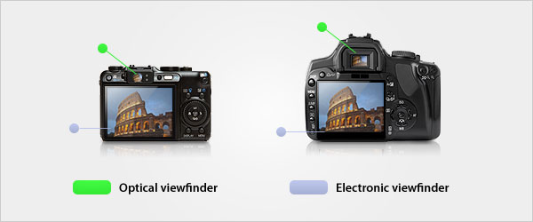Most digital cameras have two viewing systems - the optical viewfinder and the electronic viewfinder. While both systems show you what the lens sees, the electronic viewfinder can tell you other things about the nature of your digital image. One area where the electronic viewfinder is superior is in determining color balance. The electronic viewfinder can show where the highlights are overexposing (and if you’ll need to compensate). What is great is that you’ll see this in real-time. The optical viewfinder puts you directly inside the mechanical world of the camera, and tends to perhaps give you a better sense of the composition because you’re seeing exactly what the lens is seeing, not an electronic approximation.
What is "ISO"?
ISO is actually an acronym, which stands for International Standards Organization, and the ISO rating along with the shutter speed and aperture setting are the three elements that determine the final exposure of the photographic image. The ISO rating, which ranges in value from 25 to 6400 (or beyond), indicates the specific light sensitivity. The lower the number, the less sensitive to light the film stock or image sensor is. Conversely, a higher number indicates a higher sensitivity to light, thereby allowing that film or image sensor to work better in low light conditions.
ISO Sensitivity and Image Noise
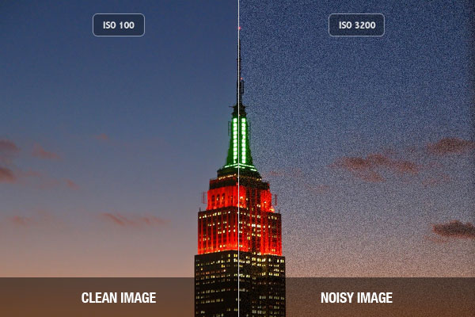With film stocks, the lower ISO rating also meant that the photosensitive grains of salt on the film acetate were very fine, thus producing a smoother, cleaner image. A higher ISO had larger, jagged grains of salt, thus producing “rougher” or grainier images. In digital photography, the same logic applies… the lower the ISO rating, the less sensitive the image sensor is and therefore the smoother the image, because there is less digital noise in the image. The higher the ISO rating (more sensitive) the stronger the image sensor has to work to establish an effective image, which thereby produces more digital noise (those multi-colored speckles in the shadows and in the midtones). So what is digital noise? It is any light signal that does not originate from the subject, and therefore creates random color in an image. The digital camera engineers have designed the image sensor to perform best at the lowest ISO (just like with film). On most digital cameras this is ISO 100, although some high end DSLRs have a mode that brings the ISO down to 50 or even 25.
One more thing about the “grain”; in the old fashioned non-digital image many film photographers found ways to creatively and artistically utilize the grain to affect the final mood and tone of an image. Unfortunately, due to the nature of digital noise (as it manifests as random clumps of colored speckles), it is highly undesirable. However, some photographers have found limited creative ways to use digital noise. Maybe you can join that rare club.
ISO Speed vs. Motion Blur
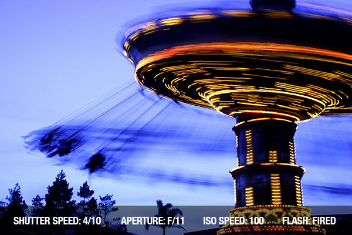Lower ISO ratings produce color-accurate, smooth and aesthetically appealing images… and this requires ideal lighting conditions. However, there are some subjects that you want to photograph in low light conditions. Or, you may want to stop fast-moving objects (a humming bird, a race horse or a carousel). In both situations, you need higher ISOs to capture those images with an acceptable exposure. Unlike film, with a digital camera you can increase the ISO with the touch of a button, and this flexibility makes it much easier to get the image you want. So with the higher ISOs, you can use faster shutter speeds to eliminate motion blur and/or camera shake. In the event that you want to use motion blur creatively, then decreasing the ISO is simple, and you can then decrease the shutter speed (less than 1/30s) to achieve the desired motion blur and still have smooth, noise-less images.
ISO Speed and Image Sensor Size
The size of the digital camera’s image sensor dictates what ISO setting provides the least amount of digital noise. One must understand that image sensor size is not the same thing as pixel count. Image sensor size is the actual physical dimensions of the sensor, for most of the history of digital photography the image sensor has been smaller than a 35mm film frame. On point and shoot cameras, the sensor was quite small, and on most DSLR cameras, the image sensor has been the size of APC film (23x15mm). Smaller image sensors produce much more digital noise at higher ISOs (like 800) mainly because the high pixel count means that more pixels are being packed into a smaller area, thus producing more grain at all but the lowest ISO.
Currently, many DSLR manufacturers produce image sensors the same size as a 35mm film frame (called Full Frame). The larger Full Frame sensor allows for more and larger pixels to be packed onto the image sensor, thus allowing for smoother, grain-free images at ISO setting of even 1600 (in some cases). On Full Frame sensors, the larger pixels are individually more sensitive to light, so the electronic energy required to mimic ISO 800 doesn’t create the same amount of digital noise as with a smaller image sensor. The Full Frame cameras enable you to capture dynamic and effective images in a variety of challenging or low light conditions without extraneous digital noise.
Image Quality and ISO Sensitivity
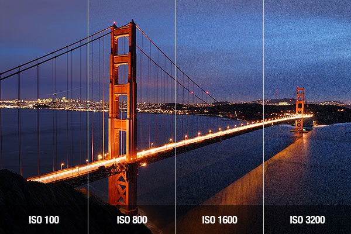It is important to remember that the lower the ISO rating the better the image quality is going to be. While most digital cameras have a default “Auto ISO” setting, this reduces your control because it can automatically set a higher ISO, which will result in a grainier (noisier) image when other settings could have created an acceptable exposure with less noise. Increasing ISO affects image quality in two major ways: 1) The distinction between fine details is reduced. 2) When you enlarge the image and make digital prints, or when you save the image as a jpeg (which has a high level of compression), the inherent high level of digital noise will result in a “muddier” image after conversion.
What Controls Exposure?
ISO ratings determine the image sensor’s sensitivity to light, each value of the rating represents a “stop” of light, and each incremental ISO number (up or down) represents a doubling or halving of the sensor’s sensitivity to light.
The Aperture controls the lens’ diaphragm, which controls the amount of light traveling through the lens to the film plane. The aperture setting is indicated by the f-number, whereas each f-number represents a “stop” of light.
The Shutter Speed indicates the speed in which the curtain opens then closes, and each shutter speed value also represents a “stop” of light. The shutter speed is measured in fractions of a second.
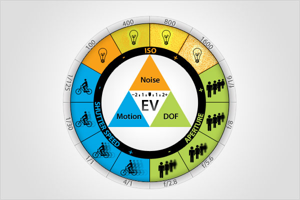When these three elements are combined, they represent a given exposure value (EV) for a given setting. Any change in any one of the three elements will have a measurable and specific impact on how the remaining two elements react to expose the film frame or image sensor and how the image ultimately looks. For example, if you increase the f-stop, you decrease the size of the lens’ diaphragm thus reducing the amount of light hitting the image sensor, but also increasing the DOF (depth of field) in the final image. Reducing the shutter speed affects how motion is captured, in that this can cause the background or subject to become blurry. However, reducing shutter speed (keeping the shutter open longer) also increases the amount of light hitting the image sensor, so everything is brighter. Increasing the ISO, allows for shooting in lower light situations, but you increase the amount of digital noise inherent in the photo. It is impossible to make an independent change in one of the elements and not obtain an opposite effect in how the other elements affect the image, and ultimately change the EV.
Aperture
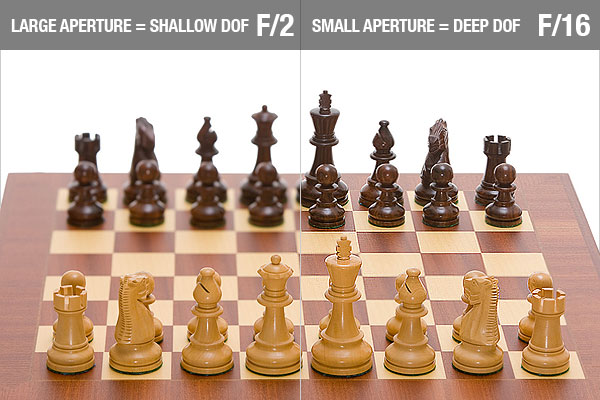A lens’s aperture is the opening in the diaphragm that determines the amount of focused light passing through the lens. At a small f-stop, say f/2, a tremendous amount of light passes through, even at a fraction of a second; but at f/22, when the diaphragm is perhaps at its smallest, only a tiny amount of light is let in (even at longer shutter speeds). An interesting thing about the aperture and the f-numbers is that it doesn’t matter the focal length of the lens as long as the f-number is held constant. This is because the arithmetical equation that determines the f-number indicates that the same amount of light passes through the lens on a 35mm lens as on a 100mm lens, with a shutter speed of 1/125s. The size of the diaphragm is unquestionably different, but the amount of light passing through is the same.
Shutter Speed
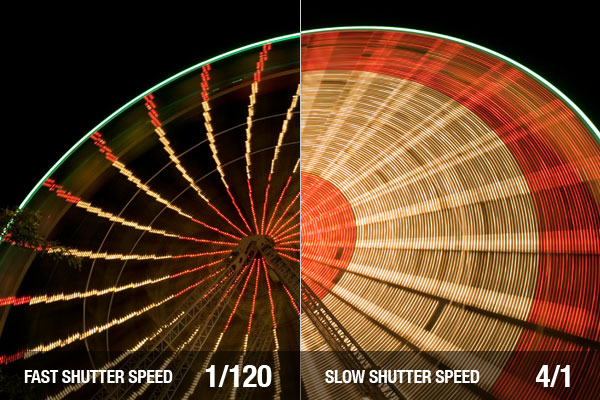Shutter speed is measured in fractions of a second, and indicates how fast the curtains at the film plane open and close. The shutter speed controls how long light enters the lens and hits the image sensor or film plane. The shutter speed enables you to capture the world in split seconds, but it can also absorb the world at speeds upwards of three and four seconds (or remain continually open up until the photographer wants to close the curtain). Snapping the shutter in a fraction of a second, also gives you control on how motion is recorded. If the shutter speed is faster than the object or background, then the image will be tack sharp. If the shutter speed is slower, then you’ll get blurred objects. Think about the rain in a rainstorm, how fast is that water falling? Well, at 1/30th the raindrops are streaks of undistinguishable white. But at 1/250th, the raindrops hover in mid air and you can see the full swell of each water drop.
What is "Auto Bracketing"?
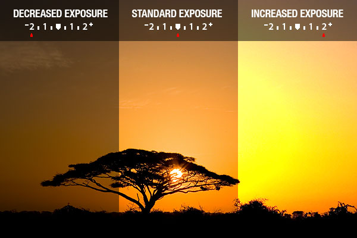Auto Bracketing is an exposure technique whereby you can ensure that you have the optimal exposure by taking at least three (3) exposures of the exact same composition with one at the metered EV, one at 1/3 of a stop below the metered EV and one at 1/3 of a stop above the metered EV. So “Auto Bracketing” is a function in which you set the EV value then release the shutter and the camera automatically makes the necessary up and down adjustments to the EV to give you the bracketed exposures. Then you can review the three (or more) exposures, see the subtle but critical differences in the images, and decide which one is the best image for your purposes. In the three images on the right, you might prefer the overexposed (by 2 stops) image because the setting sun is most brilliant. Bracketing was a technique that was popularized from shooting slide film, due to the limited ability to correct the image in the darkroom. Many photographers still use the technique today, so they have the exposure that they want. Having the three bracketed images lowers the amount of post-processing time that they might have to spend.
Overexposure & Underexposure
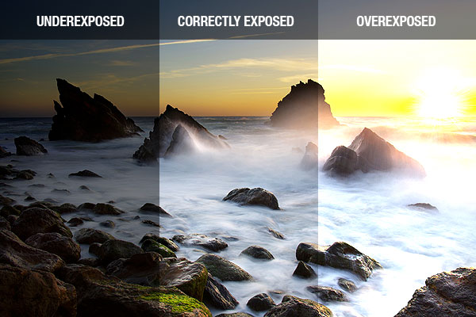How do you define overexposure and underexposure, since we said that “correct” exposure is subjective? Simply put, overexposure is when the information in the highlights is effectively unreadable. When there is this type of excessive loss of image information there is no way to “retrieve” that missing information in the digital dark room. Underexposure is pretty much the same concept; except in this case there is no image information contained within the shadows. This non-existant information cannot be retrieved through post processing either. In digital photography, once that image information is gone, there’s no way to retrieve it. This is not always the case in the photochemical world of film photography. With film (as opposed to digital) processing, it is possible to “find” image information in an excessively underexposed frame, and perhaps “find” image information during the printing process for seriously overexposed images as well.
AE LOCK (AEL)
Auto Exposure Lock is a camera setting in which the EV is locked in (when you’re shooting one of the semi-automatic or fully automatic modes, i.e. Shutter-priority), so that now matter what changes there are to the lighting in the scene, the camera locks in the ISO, Shutter and/or Aperture settings, so you can continually achieve the same EV without having to re-meter the scene.
Camera and Image Resolution
Millions of pixels that make up the image sensor in a digital camera are actually tiny light-sensitive squares. Each pixel registers the brightness of the light striking it, when you click a snapshot. These pixels in a photograph cannot be identified unless you magnify a digital image. On enlarging an image, you will find that the whole picture is a web of inter-connected lines known as rows and columns forming small boxes or squares filled with colors. These boxes are known as the pixels. Resolution is the camera’s ability to classify and effectively present discrete image information, such as details, patterns and textures within a given photographic image and it corresponds to how large a photo can become without becoming unacceptably blurry or grainy. Camera and image resolution is measured in Pixels Per Inch or PPI.
Measuring the Resolution
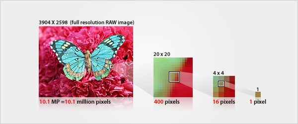Resolution can be identified by the measurement of pixels in dimensions of height and width. For example, a camera manufacturer can describe the resolution of the camera as 3904x2598 (W x H) pixels, which again can be termed as 3904x2598=10,142,592 pixels. If this number is divided by 1 million, the figure thus attained will come out to be 10.1 megapixels (one megapixel is equivalent to one million pixels). Hence, the resolution of the image can also be described as 10.1 megapixels, or 10.1 MP.
Image Resolution Printout Guide
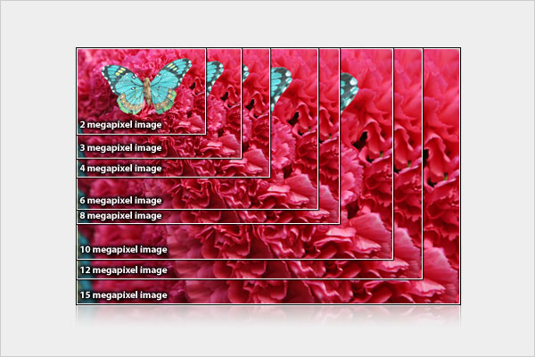The Rule of Thumb here is - the greater the number of pixels in an image, the denser the picture information and therefore the higher the resolution. Higher resolution provides more detail within your image and allows for larger printouts with smooth, continuous tone and color accuracy.
Scanner Resolution
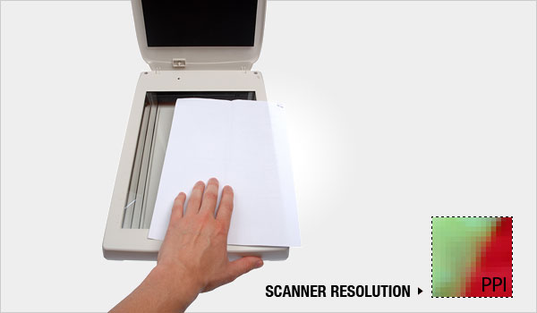A scanner is the critical link between non-digital and digital formats. Any analog image can be turned into digital form using a scanner. The question is how sharp is that image going to be? A scanner's resolution is measured by a pair of numbers, such as 300x300 ppi, 600x600 ppi, or 2400x4800 ppi. This represents the resolution as the scanner moves horizontally and vertically across an item (like a slide or a photo print) during the conversion to digital. The higher the ppi the more image information is captured at the pixel level, thus giving your photo more overall detail, sharpness, and color accuracy. So that when you look to use the scanned image, you have a greater ability to edit, manipulate and otherwise tweak the image. You’ll likely have to do some “clean up” when you bring an analog image to the digital work space. Greater scanning resolution also enables you to make larger prints. To scan photo prints, you need at least 300 ppi and 600 ppi is recommended for scanning line art documents at original size.
Monitor Resolution
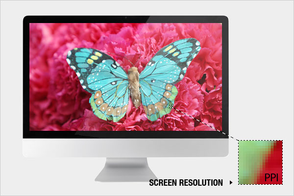Computer monitors are diagonally measured in inches. Therefore, the image displayed on the computer monitor is the composition of horizontal and vertical squares known as pixels. The total number of pixels that can be displayed on the screen at a time is called the resolution of the screen. This resolution is normally described in the pair of numbers, such as 2560 x 1440. This means, the computer screen is 2560 pixels wide and 1440 pixels tall. Other popular sizes are 800 x 600 (SVGA), 1024 x 768 (XGA), 1280 x 1024 (SXGA) and 1600 x 1200 (UXGA). The actual number of pixels per inch depends on both the resolution and size of the monitor. An image with the same number of pixels varies on a monitor, depending on its size, as the same numbers of pixels are broadened over a larger screen. One pixel on a color display is actually a combination of three colors red, green, and blue. These small elements which form an image on the monitor are called pixels, thus monitor resolution is measured in Pixels Per Inch or PPI.
Printer Resolution
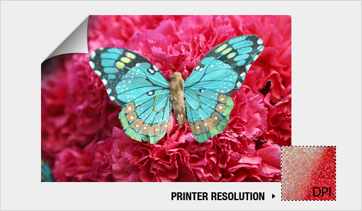The printer resolution measures your printer’s ability to lay down an effective amount of color or black ink to accurately and smoothly reproduce your digital image. The resolution is measured in Dots (of ink) Per Inch or DPI. Your typical laser desktop printer has a resolution of 600 ppi, while inkjet printers can have a resolution of 2400 dpi or higher. This is why inkjets are used for photographic printing, because the high resolution easily allows for continuous-tone images with accurate reproduction of the colors, the shadow and highlight detail, and the overall image detail. Inkjet printers have 4 to 10 colors, which can be used for printing (at least CMYK and up to multiple Black inks for better, smoother, heavier Black reproduction). You shouldn't think that you will improve the quality of your image if you use a higher dpi printer. That’s only possible if the original image file has more pixels – from being photographed at a higher resolution. If you try to enlarge an image beyond its resolution by using a high dpi printer, all you achieve is a photo with pixels that have gotten bigger, not denser. Thus the printed image looks unpleasant. So, if you want to produce sharp and good quality prints, your image must hold a large numbers of pixels close to one another.
File Compression
File compression can be achieved in basically two ways: lossless and lossy. A lossless compression algorithm does not discard any information from the file. Moreover, it looks for efficient ways to represent an image without compromising on its original quality. On the other hand, a lossy compression algorithm reduces the file size by compromising to a certain extent on the image quality.
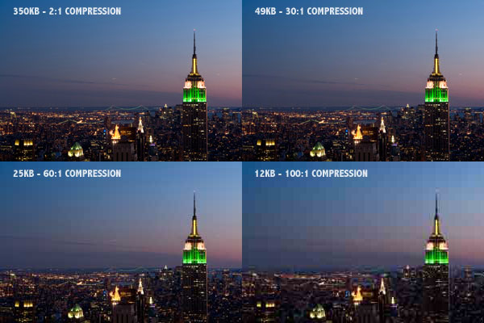JPEG
JPEG (which stands for Joint Photographic Expert Group) is the most popular form of storing digital images. When you shoot using JPEG you get more photos on your memory card, and it’s faster (in terms of saving the image to the camera and in photo manipulation later). However, JPEG is perhaps the worst of the three, because the compression algorithm used to save the image disregards far too much image information that cannot be reconstructed during decompression. JPEG usually achieves a 10:1 to 20:1 compression with little perceptible loss of image quality. You can adjust the amount of compression, so you can control the image quality and the file size. JPEG compression discards so much information that it is much more difficult to effectively post process your image (i.e. correcting color, sharpness and increasing the size of the image).
In addition, the re-edited and saved image loses still more quality (think of it as Xeroxing a photocopy). Each subsequent re-edit and save of a JPEG further reduces the quality. JPEGs are perfectly fine for most uses of digital photography (hence their overwhelming popularity), as they are smaller files and make distributing the snapshots of your trip to Hawaii or a wild night at the club that much easier.
TIFF
TIFF (which stands for Tagged Image File Format) is considered the standard photographic file format, because it is a highly flexible format that uses a lossless compression algorithm, so there’s no image degradation during compression. This ability to store image information in a lossless format makes a TIFF file very useful for archiving images. Unlike a JPEG, a TIFF file may be edited and re-saved without losing any image quality. In addition, when using a third party image processor like Adobe’s Photoshop, you retain access to the individual layers of an edited and saved image, so you can revisit them in the future. There are two types of TIFF configurations – 16-bit and 8-bit; 16-bit provides you with more information to manipulate the final image in the digital darkroom (i.e. color saturation changes, color balance changes, brightness & contrast changes, etc.), and 8-bit (best for archiving and printing), which retains all the “work” you’ve done on the photo (the layers), but saves to a relatively smaller size. In general, TIFF files can be quite large… easily ranging up to 48MB per image. But this added file size allows for very large blow-ups with no digital artifacts in the print. The one downside of TIFF is that the majority of cameras do not shoot in a dedicated TIFF file format.
RAW
4RAWRAW is basically just that – the raw, unprocessed, naked image. Think of it as the digital negative, because it performs the same function as negatives do in film photography. Just like with film negatives, RAW files need to be “processed” into a viewable format (usually TIFF or JPEG). Also, RAW files – like film negatives – have a wide dynamic range. So what’s the point of shooting RAW? You shoot RAW if you expect to do a good amount post processing work in your digital darkroom. Let’s say you shot indoors under tungsten lights, but you forgot to change the camera’s white balance from daylight. If you save the image as a JPEG, you’ll be junking most of the color information and you’ll end up with that red/yellow image (that we’ve all cringed at). With a JPEG you can’t get that lost information back, manipulating the image would be difficult, and you still might not get a pleasing image. However, as a RAW file, all the color data is still available, and you can recover the image; correct the white balance and… voila, a much more appealing photograph.